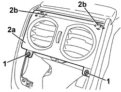

5010C32 AIR VENT ON TUNNEL COVER FOR REAR SEATS - R.R.
- Path
- Procedures > 50 AUXILIARY UNITS > 5010 CLIMATE CONTROL - MISCELLANEOUS > 5010C AIR VENTS > 5010C32 AIR VENT ON TUNNEL COVER FOR REAR SEATS - R.R.
- Kind
- repair procedure (removal / refitting; the operation number is the code)
- Applies to
- all engines; all production periods
- Interactive page
- https://sloeber94.github.io/elrnDB/#/939010899
Applies to: all engines; all production periods
 Removing
Removing
 Refitting
RefittingOp. 7040L71 BOX ON TUNNEL REAR COATING - R R
1. Undo the bolts.
2. Remove the vent (2a) releasing the internal retainers (2b).

Applies to: all engines; all production periods
Refitting
Removing- Check that the vent is not damaged.
- Refit the vent and attach the retainers.
- Tighten the bolts.
Topics linked from this page (1)
Topics that link to this page (42)
- 1820B21 MASTER CYLINDER (PUMP) - R R FOR RIGHT HAND DRIVE VERSIONS
- 2125C30 GEAR ENGAGEMENT/SELECTION CABLES - R.R
- 2125C32 GEAR CONTROL LEVER MOUNT - R R
- 3330B02 PEDAL ASSEMBLY - R.R
- 3330B23 BRAKE PEDAL - R.R. FOR RIGHT HAND DRIVE VERSIONS
- 3330B27 CLUTCH PEDAL - R.R. FOR RIGHT HAND DRIVE VERSIONS
- 3330B42 PEDAL UNIT SUPPORT - R.R. FOR RIGHT HAND DRIVE VERSIONS
- 3330D18 BRAKE SERVO R R FOR RIGHT HAND DRRIVE VERSIONS
- 3350E30 LATERAL ACCELERATION AND SLEWING SENSOR - R.R
- 3380A10 HANDBRAKE LEVER - R+R
- 3380A30 HANDBRAKE CABLE - R+R
- 5010B24 UNDER-FACIA AIR DUCTS - R.R.
- 5010B44 REAR SEAT AIR DUCT - ARRANGE
- 5010B46 CENTRAL AIR DUCT TO REAR SEATS - R.R.
- 5040C10 AIR CONDITIONING CASING - R.R
- 5040C50 AIR CONDITIONING HEATER RADIATOR - R.R.
- 5040C64 A/C EVAPORATOR - R+R
- 5040D80 AIR CONDITIONER SYSTEM WIRING BUNDLE - R R OR REPLACE
- 5040D86 AIR CONDITIONING RIGHT AIR MIXTURE FLAP CONTROL MOTOR - R.R
- 5040D94 AIR CONDITIONING LEFT UPPER AIR DISTRIBUTION FLAP MOTOR (DEFROST) - R.R
- 5040D96 AIR CONDITIONING RIGHT UPPER DISTRIBUTION FLAP MOTOR (DEFROST) - R.R
- 5505C28 ENGINE COMPARTMENT AND A.B.S BUILT-IN WIRING - R.R.
- 5505C31 BUILT-IN WIRING UNDER DASHBOARD - R.R.
- 5505C41 PASSENGER COMPARTMENT WIRING - R.R
- 5550D18 HANDBRAKE ON WARNING LIGHT SWITCH - R+R
- 5570T31 AERIAL COAXIAL LEAD - R R
- 5580C22 AIR BAG MODULE - PASSENGER SIDE - R.R
- 5580C24 PASSENGER SIDE AIR BAG MODULE SUPPORT R. R.
- 7030B12 SLIDING ROOF (ASSEMBLY) - R+R
- 7030B40 DRAINAGE CHANNEL - R R
- 7030B50 SUN ROOF SLIDING GUIDE (ONE), LH OR RH - R.R
- 7040A10 DASHBOARD TRIM - R+R
- 7040A89 REINFORCEMENT BRACKET BETWEEN DASHBOARD SUPPORTING CROSSMEMER AND BODYSHELL - R.R.
- 7040H10 ROOF PANEL LINING - R.R.
- 7040H16 ROOF PANEL LINING FOR VERSIONS WITH SUN ROOF - R.R
- 7040L18 PASSENGER COMPARTMENT FLOOR REAR CARPET - R.R.
- 7040L20 TUNNEL COVER - R.R
- 7040L23 TRIM ON TUNNEL COVER - R.R.
- 7040L70 TUNNEL COVER REAR TRIM - R.R.
- 7040L73 BOTTLE-HOLDER/ASHTRAY ON REAR TUNNEL TRIM - R.R.
- 7040L74 TUNNEL TRIM SUPPORT BRACKET/MOUNT R R
- 7210A74 R R FACIA SUPPORT BEAM